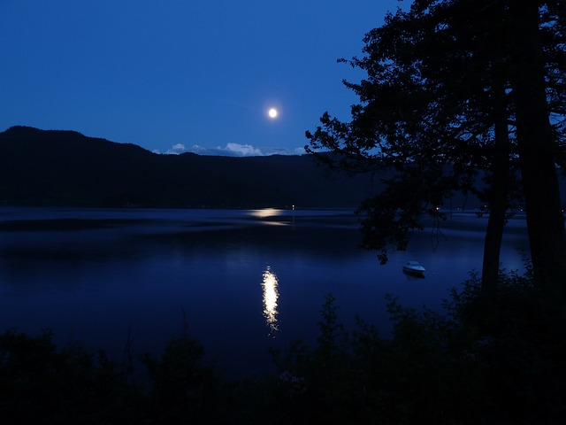

There are three primary colors on the color spectrum. They are red, yellow and blue. You can make any other color imaginable by mixing various combinations of these colors.
For my project, I'm talking about the color blue. Which also happens to be my favorite color.
Some of the reasons I like this color is because of the range of shades. It can range from the lightest almost white shades of blue.
Notice the various and subtle shades of blue in the picture from the light piercing the clouds to all the shades around it.
And, it can go in the opposite direction to the darkest nearly black shades of of blue.
Again, notice how the blue shades range from light to almost black.
Felecia Gordon, July 2016